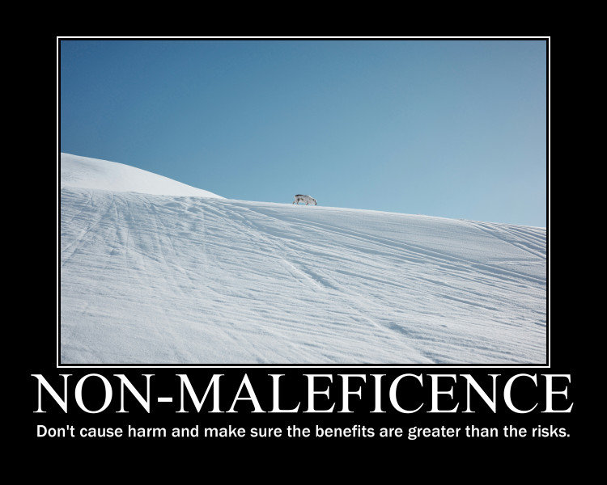

group_allocation <- function(names, seed, groups = 9 ){
set.seed(seed)
tmp <- sample(names, replace = FALSE)
split(tmp, cut(seq_along(tmp), groups, labels = paste("Group", 1:groups)))
}Notes
All BIOSCI 738 lectures require your active involvement! See the course policies for further infomation.
Throughout this runsheet you’ll find a number of different callout boxes:
this box will contain the expected learning objectives and/or outcomes for the material
this box will contain some useful information
First things first…
Note the randomly allocated group mentioned above. Each lecture I’ll have run the following R function that randomly allocates you into groups. It’s your responsibility to get into them, just look for the cows!

Accessing activities
Scan the QR code below, I have provided links to both this runsheet and the slides.
March 17th
By the end of today’s seminar, you will be able to:
- Recognise that while individuals (and societies) may have different opinions and approaches to ethics, but we can use codes of conduct to support our professional ethical decision making.
- Describe some of the values, principles, responsibilities, and standards from the Royal Society Te Apārangi Code of Professional Standards and Ethics in Science, Technology, and the Humanities.
- Describe how ethical decisions can appear throughout different stages of study and research in biology.
- Identify issues and provide advice for ethical decision making in biology contexts.
Slides
xaringanExtra::embed_xaringan(
"https://lizabolton.github.io/2025-biosci738-ethics/#/title-slide",
ratio = "16:9",
border = "2px solid currentColor",
max_width = NULL,
margin = "1em auto",
style = NULL
)Rough timeline
- 09:05–09:20 AM Introduction (see slides)
- 09:20–09:55 AM Your ethical experiences and codes of conduct Section 3
- Group discussion
- Class discussion
- Start on ethical data practices and introduction to the case studies (see slides) if time
- 09:55–10:05 am Break
- 10.05–10.20 am Ethical data practices and introduction to the case studies (see slides)
- 10.15–10.45 am Case studies
- Groups work through the case studies
- Class discussion
- 10.45–10.55 am Wrap-up (and Code of Conduct meme-off if anyone has enough time to make them)
Randomly allocated groups
It’s your responsibility to get into these, just look for the cows!
group_allocation(names, seed = 1992)$`Group 1`
[1] "He Li" "Ziyi Wang" "Shuxiang He" "Yutong Wang"
$`Group 2`
[1] "Zhixiao Zhang" "Yutao Yang" "Tongzheng Yao" "Karie Labidon"
$`Group 3`
[1] "Happy Liang" "Antonia Schebek-Fuerstenberg"
[3] "Congkai Meng" "YOGAPRIYA S"
$`Group 4`
[1] "Jiaxin Liu" "Sunny Chen" "Anqi Cheng" "Leyang Liu"
$`Group 5`
[1] "Zichang Li" "Robert Mihok" "Pikitangarangi Ratapu"
$`Group 6`
[1] "Bayu Pitandoyo" "Emma Akeroyd" "Charlotte Sutton" "Yue Ma"
$`Group 7`
[1] "Laura Munck" "Barnaby Clegg-Shaw" "Xinyue Zhang"
[4] "Jianing Chen"
$`Group 8`
[1] "Alex Johnson" "Lana Najar" "Yi Han" "Angel Loh"
$`Group 9`
[1] "Yingyi Wang" "Julia Thain" "Keyi Sun" "Shoule Du" Group discussion: Codes of conduct
What experiences have you had with ethical decisions as a student and/or early career researcher and/or employee?
Read over the Royal Society Te Apārangi Code of Professional Standards and Ethics in Science, Technology, and the Humanities.
Describe a possible workflow for biological research. Come up with possible ethical decisions for each stage.
Bonus activity
If you have time (now or in the second half), do one of the following:
- Rewrite one of the values & principles of responsibility & standards using the most intense slang you can (Gen-Z, 80s valley girl, up to you, just keep it ‘family friendly’).
OR
- Make a cheesy motivational poster / ‘hopecore’ edit for one of the principles from the Royal Society Te Apārangi Code

Case studies
For each of the following case studies, discuss the situation and identify potential ethical issues. For some, you may need to run the associated code in R.
Case 1
A mine has been accused of managing their tailings poorly, causing dangerous chemicals to enter the nearby swamp. Local councillors, S. Hrek and D. Onkey, have complained that it is bad for the Hochstetter’s frog | Pangokereia living there and you have been hired by the mine to help them combat these allegations.
You are contracted to measuring the weight of the frogs in the area, with the idea that if the frogs are unhealthy, their weight will be lower than was found in a previous survey of the area. That previous study found that the average weight of the Hochstetter’s frogs in this location is 6.5 grams.
While you are catching and measuring the live frogs, you notice that there are not many juvenile frogs (‘froglets’) despite it being the season when many should be maturing from tadpoles into adult frogs. As Hochstetter’s frogs mature their colouring darkens and you notice that most of the frogs have quite dark colouring.
You can run the below code to find the mean weight of the frogs you studied and perform a t-test.
# The weights of 30 frogs
frog_weights <- c(5.6, 8.7, 6.1, 6.2, 5.1, 6.8, 6.8, 6.5, 7.0, 7.5, 6.3, 5.8, 6.3, 7.1, 6.9, 6.4, 8.3, 7.4, 7.6, 6.8, 7.3, 9.1, 8.1, 6.8, 6.1, 6.8, 6.9, 7.2, 7.2, 7.5)
# Calculate the average weight in this sample
mean(frog_weights)
# One sample t-test, one sided
t.test(frog_weights, mu = 6.5, alternative = "less")
Look up R documentation
You can run ?t.test in your R console to see the documentation for the basic t-test used above.
A mine executive is very relieved by your results and interprets them as indicating that the frogs are doing very well as they are even larger and healthier than they were before.
Case 2
You have been hired to work with a local iwi to collect data on the locations and habits of a rare albino kiwi bird with a distincitve call. Data is collected across an array of microphones and is used to create a location heat map for where the kiwi spends time.
The iwi are kaitiaki (caretakers) of the area where this kiwi lives. They are also worried about increasing attempts from tourists and others to get pictures of this rare bird and how this risks disturbing and destressing the animal, risking its health and that of other kiwi in the area.
You finish up the work and your clients are very happy with it, especially complimentary about the data visualisation showing the common locations the kiwi visits by longitude and latitude.
You are preparing an update to your CV to apply for a job, and you notice that transperancy and open data practices are key values of the research institute you are applying to. You write a blog post for your website outlining your findings from the kiwi research, clearly outline the data collection processes, analytical choices, and limitations. You create a public GitHub repository that provides all the code and data to create the location heat maps.
You’re about to press publish so you can link to it in your application, but a little voice in your head stops you…
Case 3
Concerns have been raised that a off-roading adventure course has caused vegetation loss and increased the risk of wind erosion due to exposed soil. The area where the course has been developed is a large, flat tussock grassland in the South Island. The grassland is fairly similar throughout, and has not been disturbed other than the dirt track for the off-road vehicles to travel on — this area is not included in the coverage measures.
High resolution drone photography of the area has been used to estimate vegetation coverage both close to the course and further away in the undisturbed grassland. To gather the data, 100 meter lines parallel to the course, spaced every 5 meters, are drawn on the aerial imagery. Five one meter square areas are randomly chosen along each line and the vegetation coverage estimated using an appropriate machine learning tool.
# You need the library tidyverse installed to run this code
library(tidyverse)
veg_cov <- tibble(
dist_from_road = c(
0, 0, 0, 0, 0, 0, 0, 0, 0, 0, 5, 5, 5, 5, 5, 5, 5, 5, 5, 5,
10, 10, 10, 10, 10, 10, 10, 10, 10, 10, 15, 15, 15, 15, 15, 15, 15, 15, 15, 15,
20, 20, 20, 20, 20, 20, 20, 20, 20, 20, 25, 25, 25, 25, 25, 25, 25, 25, 25, 25,
30, 30, 30, 30, 30, 30, 30, 30, 30, 30, 35, 35, 35, 35, 35, 35, 35, 35, 35, 35,
40, 40, 40, 40, 40, 40, 40, 40, 40, 40, 45, 45, 45, 45, 45, 45, 45, 45, 45, 45,
50, 50, 50, 50, 50, 50, 50, 50, 50, 50, 55, 55, 55, 55, 55, 55, 55, 55, 55, 55,
60, 60, 60, 60, 60, 60, 60, 60, 60, 60, 65, 65, 65, 65, 65, 65, 65, 65, 65, 65,
70, 70, 70, 70, 70, 70, 70, 70, 70, 70, 75, 75, 75, 75, 75, 75, 75, 75, 75, 75,
80, 80, 80, 80, 80, 80, 80, 80, 80, 80, 85, 85, 85, 85, 85, 85, 85, 85, 85, 85,
90, 90, 90, 90, 90, 90, 90, 90, 90, 90, 95, 95, 95, 95, 95, 95, 95, 95, 95, 95,
100, 100, 100, 100, 100, 100, 100, 100, 100, 100
),
coverage = c(
27.9, 22.5, 27, 21.8, 29.6, 29.2, 21, 21.7, 29.9, 28.5, 26.7, 29.4, 20.6, 26.2, 21.7, 20.4, 25.3, 22.8, 25, 26.3,
20.1, 26.1, 27.8, 29.2, 22.9, 27.9, 25.7, 27.8, 27.1, 26.7, 29.3, 25.1, 27.5, 28.4, 28.7, 21.9, 22.2, 26.5, 23.4, 25.1,
26.5, 29.7, 25.1, 20.6, 21.5, 26.4, 21, 27.7, 24.1, 28.7, 27.7, 26.5, 26.3, 28.3, 21.3, 28.8, 22.4, 26.5, 22.3, 20.7,
21.3, 56.9, 33.7, 57.5, 40.4, 25.3, 52.8, 56.9, 58, 42.3, 41, 41.4, 58.7, 41.1, 41.3, 44.8, 56.9, 29.1, 57.1, 57.2,
40.9, 59.6, 22.6, 54.5, 39.2, 41.4, 36.6, 29.1, 59.3, 46.2, 43.2, 25.6, 47.9, 49.9, 58.1, 25.2, 46, 48.3, 24, 22.8,
31.2, 49.4, 58.5, 52.6, 36.7, 38.2, 34.5, 21.8, 48.8, 55.2, 75.3, 51.7, 64.7, 70.4, 55.5, 59.1, 74.5, 77.4, 76.3, 76.5,
59.7, 59.4, 74.7, 50.2, 50.5, 51.1, 51.4, 79.3, 78.8, 71.2, 73.6, 71, 59.4, 66.4, 79.2, 65.9, 60.5, 78.8, 51.7, 57.2,
67.5, 55.3, 53.8, 65.1, 70.6, 73.1, 51.2, 75.3, 70.8, 72.3, 66, 56.6, 67.3, 66.3, 73.9, 56.5, 57.5, 75.1, 68.5, 59,
76, 60.6, 69.2, 75.8, 61.8, 60.8, 62.7, 66, 65.8, 60.1, 55.8, 74.1, 60.8, 79, 53.8, 73.7, 56.2, 57.3, 77.1, 53.6,
61.9, 71.9, 71.8, 51.8, 68.7, 66.4, 65.6, 77.5, 76.1, 66.4, 58.7, 71.2, 78.1, 51.1, 64.3, 51.4, 65.3, 50.5, 50.5, 61.8, 56.3, 64.9, 50, 61.3, 64.8, 57.7, 60.8, 62.6,65.4,69))
plot <- ggplot(veg_cov, aes(x = dist_from_road, y = coverage)) +
geom_point() +
xlim(0, 25) +
ylim(0, 30) +
geom_smooth(method = "lm", formula = 'y ~ x', col="darkgreen") +
labs(x = "Distance from road (m)", y = "Coverage (%)",
title = "Vegetation coverage near to roading project similar to surrounding area") +
theme_minimal()
suppressWarnings(print(plot))Finished early?
Work on the bonus activity.